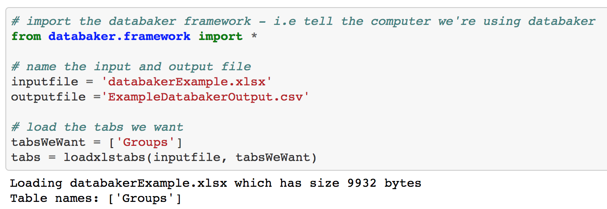

The Four Stages¶
You can roughly split every databaker extraction into four stages. Each stage serves a different purpose and has a few syntactic tools which will be covered in the relevant sections.
Don’t worry about understanding everything at once, the wakthrough will take us through the stages in-action
1. Loading spreadsheets and tabs¶
This is a straight forward and won’t require its own section.
We can ignore the line regarding naming the output file. This is for later in the process.
2. Selection¶
This is wholly concerned with the logic behind selecting cells of data based on their content of formatting, then assigning that selection to a variable.
Typical Examples:
- select all bold cells in column B and assign to a variable
- select all cells containing the text “female” from a tab and assign to a variable
The syntax for this will be covered in more detail later.
3. Extraction¶
This process consists of creating instructions that specify the relationship between those cells you have selected as your observations (the ‘values’ you are trying to extract). And those cells that contain the dimension for those observations.
We’ll cover this in more detail later and in the walkthrough (it’s worth spending some time on understanding this part of the walkthrough).
It may also be worth looking in the term “OLAP cube” if its unfamiliar. As it’s a help in understanding the goal of this stage.
This stage will be covered in more detail later.
4. Output the Results as a CSV¶
This is the clean-up stage of the extraction and in the majority of cases is boiler plate code.
In instances of particularly “dirty” data or awkward transformations you can freely shift processed databaker output into a pandas dataframe for additional processing (before anything is written to csv).
It’s rarely necessary but serves as a good catch-all for outlier cases (pandas is a very powerful and well supported library).
Any pandas-from-databaker dataframes will be handled and written by the databaker csvWriter in the exact same way as non dataframe output is.
This stage will be covered in more detail later.